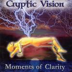

| Artist: | Cryptic Vision |
| Title: | Moments Of Clarity |
| Label: | Independent |
| Length(s): | 57 minutes |
| Year(s) of release: | 2003 |
| Month of review: | [05/2004] |
| 1) | Introspective | 5.06 |
| 2) | New Perspective | 4.05 |
| 3) | Contemplation | 4.16 |
| 4) | Grand Design | 7.16 |
| 5) | Angeline | 4.22 |
| 6) | Losing Faith | 2.25 |
| 7) | Angel's Requiem | 2.14 |
| 8) | Colored Leaf | 4.44 |
| 9) | Shock Value | 4.03 |
| 10) | Moments Of Clarity | 12.28 |
| 11) | Ascension | 5.42 |
Grand Design has multiple layered vocals, strong and fitting, with the mellotron synths in the back, a lot of gusto and dramatics, throbbing bass as part of a strong rhythmic section, and with an almost abstract intermezzo this has become quite a bit of a track. From this the rather sticky Angeline (sort of a Boston ballad) is quite a contrast.
Losing Faith and Angel's Requiem have an intermezzo character, lining up for Colored Leaf, which is a tracking with a hauting piano loop and lingering guitar. Good stuff. Shock Value starts out a tad on the rocky side, but turns up well thought out moving into Moments Of Clarity smoothly.
The title track can be seen as the epitomy of the album, summing it up in all its aspects. The track starts rocky and riffy, with vocals that would well suit an AOR band. The second apart of the track Abaddon is ominous, from which we return on a light note for part three (In Due Time). Soon this displays lingering guitars. The voice is now more melodic than rocky, and at times we hear vocal harmonies from somewhere between Trent Gardner and Styx.